Sejarah Indonesia Modern 1200–2008
Buku ini membahas perjalanan sejarah Indonesia sejak sekitar tahun 1200, termasuk perkembangan Islam, kerajaan-kerajaan Nusantara, kedatangan bangsa Eropa, kolonialisme Belanda, munculnya nasionalisme, kemerdekaan, hingga perkembangan Indonesia setelah Reformasi. Buku ini juga membahas bagaimana masyarakat dari berbagai daerah akhirnya membentuk identitas sebagai bangsa Indonesia.
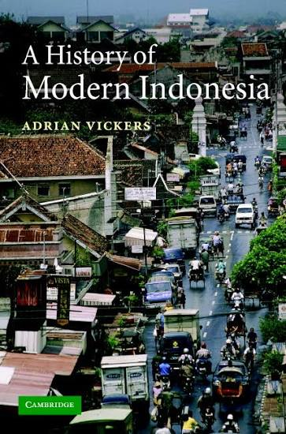
A History of Modern Indonesia
Menguraikan sejarah Indonesia pada abad ke-20, mulai dari masa kolonial Belanda, perjuangan kemerdekaan, Revolusi, masa 1950-an, pemerintahan Soekarno, pergantian menuju pemerintahan Soeharto, Orde Baru, hingga jatuhnya Soeharto dan perkembangan awal Reformasi.
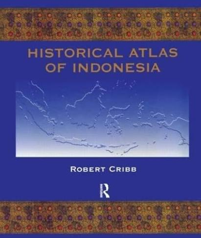
Historical Atlas of Indonesia
Menjelaskan sejarah wilayah yang kemudian menjadi Indonesia melalui lebih dari 300 peta dan penjelasan sejarah. Pembahasannya mencakup migrasi manusia, perubahan wilayah, kelompok etnis, kerajaan, kolonialisme, hingga perkembangan Indonesia modern.
A Short History of Indonesia: The Unlikely Nation?
Menguraikan perjalanan terbentuknya Indonesia sebagai sebuah bangsa, dari masa sebelum kemerdekaan hingga perkembangan negara modern. Pembahasannya memberikan gambaran ringkas mengenai perubahan politik dan masyarakat Indonesia.
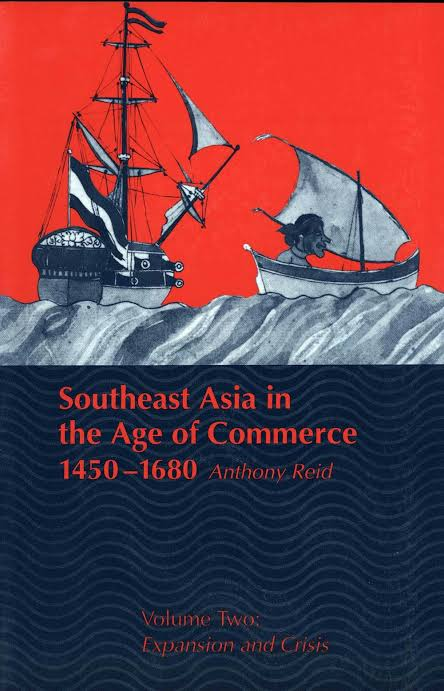
Southeast Asia in the Age of Commerce, 1450–1680
Membahas Asia Tenggara pada masa berkembangnya perdagangan sekitar abad ke-15 hingga ke-17. Pembahasannya meliputi perdagangan internasional, kota pelabuhan, kerajaan, agama, masyarakat, dan hubungan kawasan Asia Tenggara dengan dunia luar.
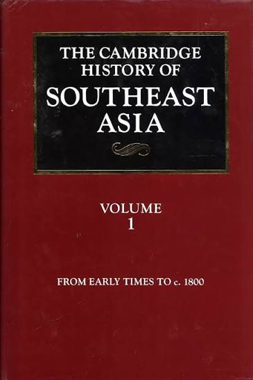
The Cambridge History of Southeast Asia, Volume 1
Membahas sejarah Asia Tenggara dari masa awal hingga sekitar 1800. Topiknya mencakup masyarakat awal, kerajaan, ekonomi, agama, budaya, kedatangan bangsa Eropa, serta perubahan perdagangan di kawasan Asia Tenggara.
The Cambridge History of Southeast Asia, Volume 2
Membahas perkembangan Asia Tenggara dari akhir abad ke-18 hingga abad ke-20. Isinya meliputi kolonialisme Eropa, perubahan ekonomi dan sosial, nasionalisme, gerakan kemerdekaan, Perang Dunia II, serta terbentuknya negara-negara modern di Asia Tenggara.
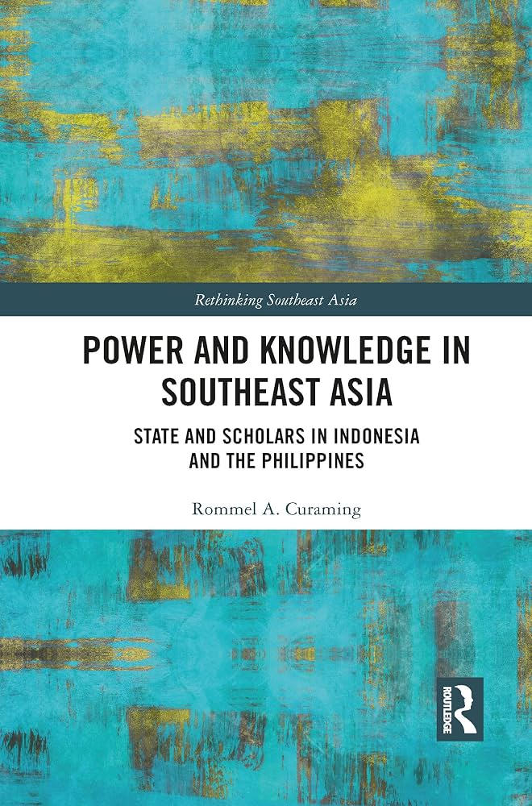
Power and Knowledge in Southeast Asia
Membahas hubungan antara kekuasaan politik dan penulisan sejarah di Indonesia dan Filipina. Salah satu fokus utamanya adalah proses pembentukan Sejarah Nasional Indonesia pada masa pemerintahan Soeharto serta bagaimana sejarah digunakan dan dipengaruhi oleh konteks politik.
An Indonesian Frontier: Acehnese and Other Histories of Sumatra
Mengkaji sejarah Aceh dan Sumatra dalam kaitannya dengan perdagangan, politik, masyarakat, serta hubungan kawasan tersebut dengan kekuatan asing. Buku ini memperlihatkan bahwa sejarah Sumatra memiliki peran penting dalam sejarah Indonesia dan Asia Tenggara. Karya ini tercatat dalam bibliografi kajian sejarah Indonesia.
The Contest for North Sumatra: Atjeh, the Netherlands and Britain 1858–1898
Membahas persaingan politik dan kekuasaan di Sumatra Utara pada abad ke-19, terutama hubungan Aceh dengan Belanda dan Inggris. Kajian ini menunjukkan bagaimana kepentingan perdagangan dan kolonialisme memengaruhi perkembangan politik di kawasan tersebut. Judul ini tercantum dalam bibliografi sejarah Indonesia Cambridge.
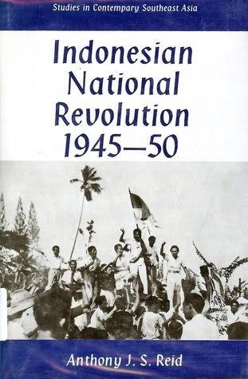
Indonesian National Revolution
Membahas perjuangan bangsa Indonesia dalam mempertahankan kemerdekaan setelah Proklamasi 1945. Pembahasannya mencakup dinamika politik, konflik bersenjata, masyarakat, serta hubungan Indonesia dengan Belanda dan kekuatan internasional selama Revolusi. Judul ini tercatat dalam bibliografi sejarah Indonesia Cambridge.
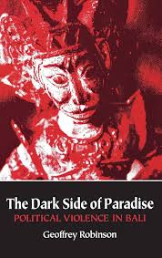
The Dark Side of Paradise: Political Violence in Bali
Mengkaji sejarah kekerasan politik di Bali, terutama hubungan antara perubahan politik, masyarakat lokal, dan konflik pada abad ke-20. Buku ini menggunakan pendekatan sejarah untuk memahami perubahan politik dan kekerasan yang terjadi di Bali. Judul dan penerbitannya tercatat dalam bibliografi Cambridge.
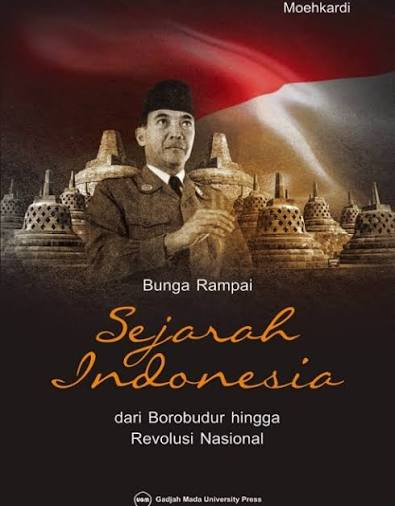
Bunga Rampai Sejarah Indonesia: dari Borobudur hingga Revolusi Nasional
Mengumpulkan berbagai pembahasan sejarah Indonesia dari masa kerajaan hingga Revolusi Nasional. Topiknya meliputi sejarah Borobudur, geografi sejarah, kesenian, Proklamasi, pertempuran masa revolusi, pendidikan perwira, serta tokoh-tokoh penting Indonesia.
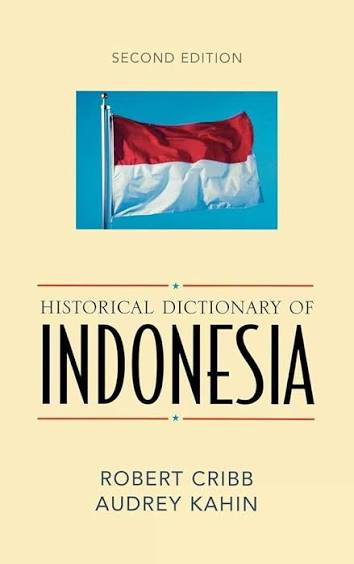
Historical Dictionary of Indonesia
Berisi berbagai informasi sejarah Indonesia yang disusun dalam bentuk entri dan dilengkapi kronologi, peta, lampiran, serta bibliografi. Buku ini dapat digunakan untuk mencari informasi tentang tokoh, organisasi, tempat, peristiwa, dan istilah penting dalam sejarah Indonesia.
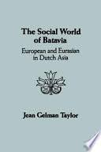
The Social World of Batavia: European and Eurasian in Dutch Asia
Mengkaji kehidupan sosial Batavia pada masa kolonial. Pembahasannya berfokus pada masyarakat Eropa dan Eurasia serta hubungan mereka dengan lingkungan sosial dan politik Batavia sebagai pusat pemerintahan kolonial Belanda di Asia.
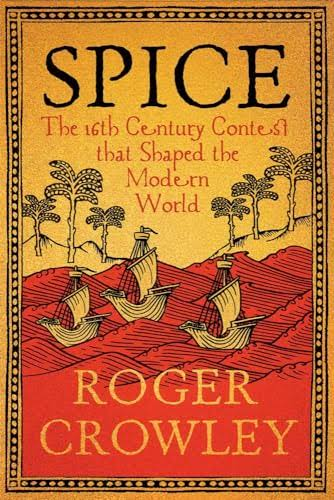
Spice: The 16th-Century Contest that Shaped the Modern World
Membahas persaingan memperebutkan perdagangan rempah-rempah pada abad ke-16. Perdagangan cengkih, pala, dan rempah lainnya mendorong pelayaran bangsa Eropa menuju Asia serta menghasilkan persaingan dan penaklukan di kawasan Asia dan Pasifik.